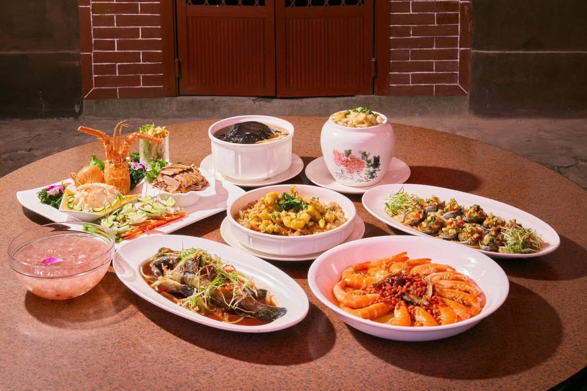
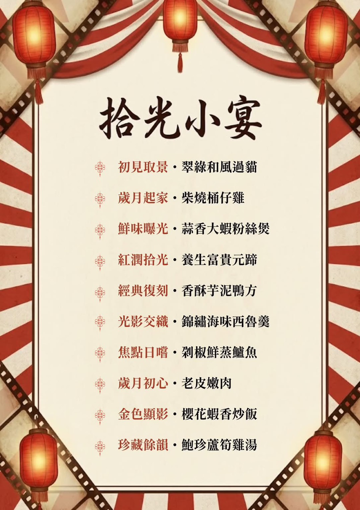
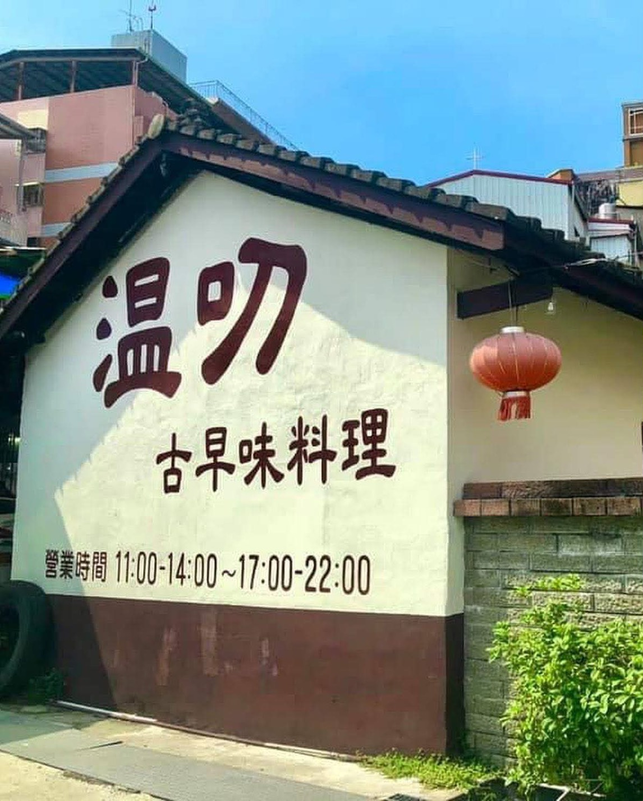
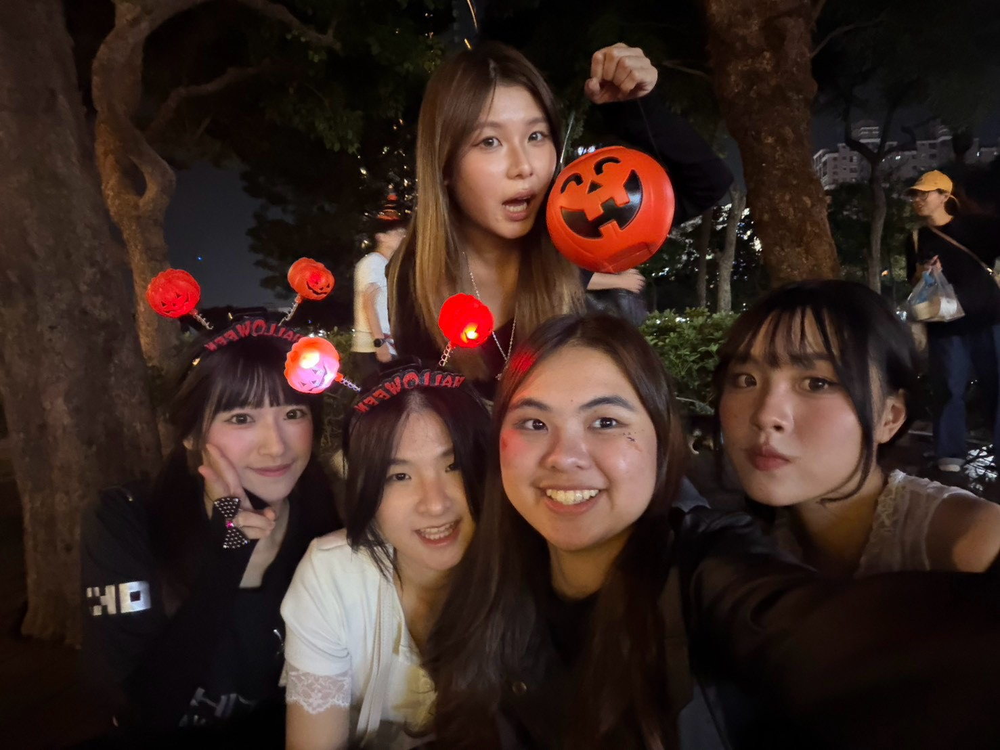
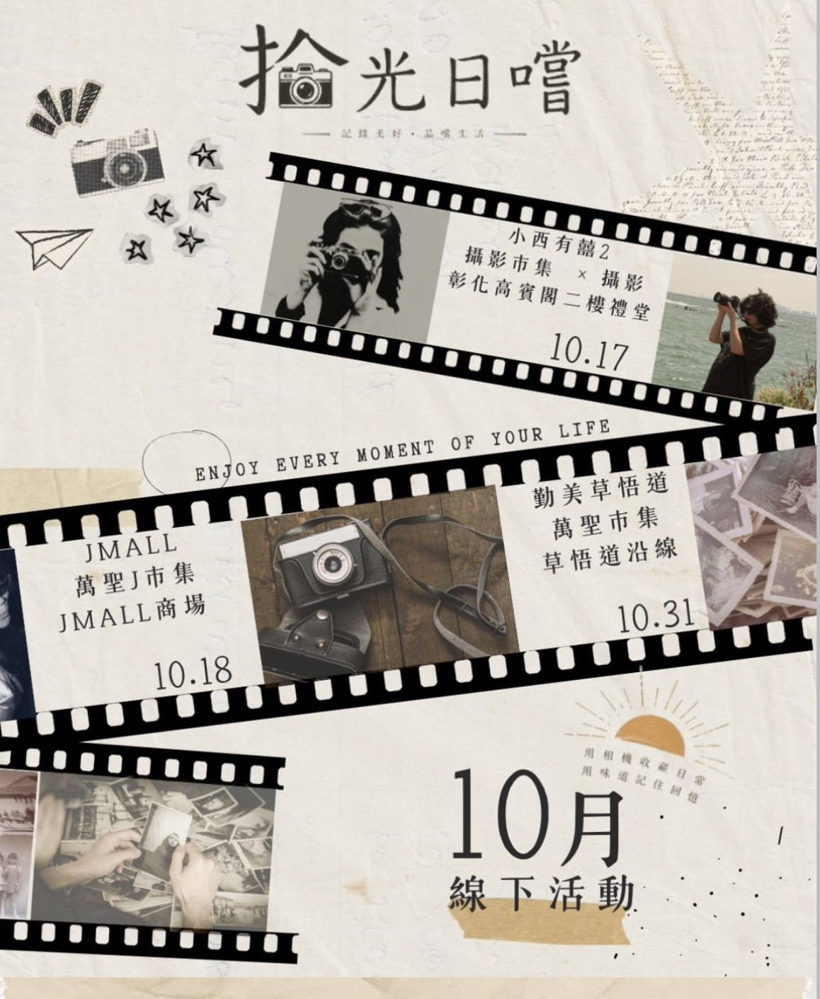

創「異」‧ 內容差異化
突破學生同溫層
設計《回憶裡的傳統美味》深度人物與美食故事短影音，18–34 歲成熟受眾觸及佔比高達 79.5%，帶動跨圈擴散。
延伸「美食 × 人物 × 攝影」，將懷舊情緒轉化為記錄當下的感動。
設計《回憶裡的傳統美味》深度人物與美食故事短影音，18–34 歲成熟受眾觸及佔比高達 79.5%，帶動跨圈擴散。
規劃「傳統美味懶人包」帶來高轉發與收藏，搭配「命定相機輪盤遊戲」創造高互動留言率。
與深耕台中十年的「樂魔派 LOMOPIE」合作，結合底片拍攝與古早味飲品誘因，實現流量實體沈澱。
2026年11月22日 於溫叨古早味料理餐廳，打造 50~60 人售票主題懷舊饗宴。

圖｜「拾光小宴」經典十道傳統手路菜
圖｜拾光小宴 懷舊菜單
圖｜溫叨古早味料理 餐廳外觀進駐彰化高賓閣《小西有囍2》、JMall《萬聖J市集》與勤美草悟道《HalloWoof 萬聖節市集》。

圖｜勤美草悟道萬聖市集 擺攤活動紀錄
圖｜10 月線下三場巡迴市集宣傳海報逢甲大學行銷學系 行銷四甲 第八組 ｜ 指導教授：王郁彬
畢業專題主要負責事項：
二、社群企劃與引流戰績
由黃語甄主導社群引流策略，透過精準文案鉤子與稀缺性行銷創造高轉換。
🔥 Threads 爆款操作邏輯